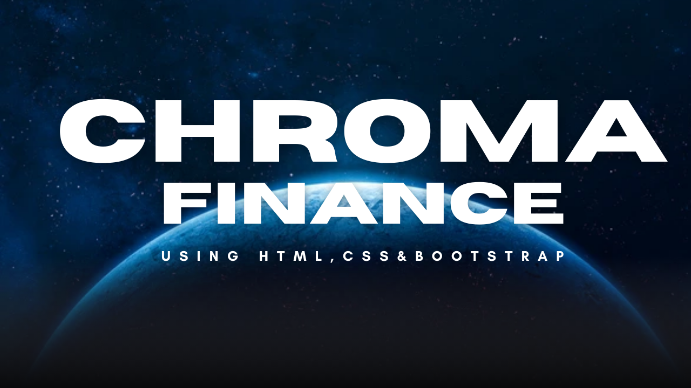

Chroma Finance
Starting date: 1 July 2024
Ending date: 20 July 2024
About
Chroma Finance is a comprehensive financial management platform designed to simplify and streamline personal and business finance. This project aims to provide users with easy-to-use tools for budgeting, tracking expenses, and managing investments—all in one secure platform.
Objective
The primary objective of the Chroma Finance project is to build a comprehensive and intuitive financial management platform that enables individuals and businesses to better manage their finances. The key objectives include:
- Simplify Financial Management: Provide users with an easy-to-use platform that helps them manage budgets, track expenses, and make informed investment decisions, all in one place.
- Create Powerful Budgeting and Expense Tracking Tools: Develop tools that allow users to set and track budgets, categorize expenses, and visualize their spending habits, helping them achieve their financial goals.
- Offer Investment Tracking and Management: Enable users to track their investments, monitor portfolio performance, and make smarter financial decisions based on real-time data.
- Ensure Data Security: Implement robust encryption and security measures to ensure that all user financial data is stored safely and kept confidential.
- Enhance User Experience: Design an intuitive, user-friendly interface that is accessible to both finance beginners and experienced users, ensuring an effortless navigation experience.
- Provide Real-Time Insights: Offer data analytics and real-time financial insights to help users understand their financial health and make timely decisions.
Screenshots


Live Demo
Title:Chroma Finace Based on Finance Theme Using HTML,CSS and Bootstrap | Coding Universe
Description:Welcome to Chroma Finance, a sleek and modern finance-themed website built using HTML, CSS, and Bootstrap. This project is designed to showcase financial services and tools with a clean, user-friendly interface. The goal of this project is to create a fully functional, attractive, and responsive website that provides essential financial information, from stock market updates to investment options, all within a well-organized layout.
This project has been an excellent opportunity to apply web development skills in a real-world finance context. I hope it inspires others to create visually appealing, functional websites in the finance domain!